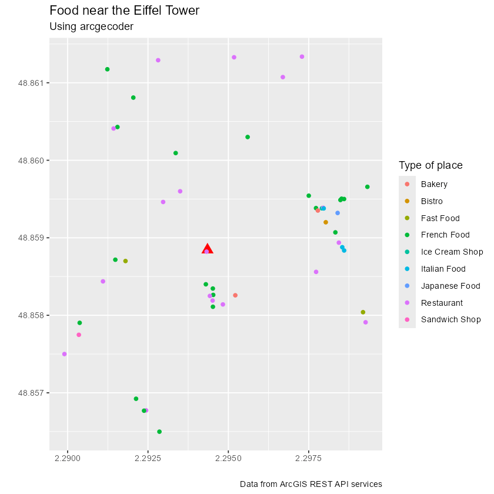

The goal of arcgeocoder is to provide a light interface for geocoding addresses and reverse geocoding locations through the ArcGIS REST API Geocoding Service.
Full site with examples and vignettes on https://dieghernan.github.io/arcgeocoder/
Why arcgeocoder?
arcgeocoder is a package that provides a lightweight interface for geocoding and reverse geocoding with the ArcGIS REST API service. The goal of arcgeocoder is to access the ArcGIS REST API with fewer dependencies, such as curl . In some situations, curl may not be available or accessible, so arcgeocoder uses base functions to overcome this limitation.
The interface of arcgeocoder is built with the aim of easing the access to all the features provided by the API. The API endpoints used by arcgeocoder are findAddressCandidates and reverseGeocode, which can be accessed without the need for an API key.
Recommended packages
There are other packages much more complete and mature than nominatimlite, that present similar features:
- tidygeocoder (Cambon et al. 2021). Allows to interface with ArcGIS, Nominatim (OpenStreetMaps), Google, TomTom, Mapbox, etc. for geocoding and reverse geocoding.
- nominatimlite (Hernangómez 2024). Similar to arcgeocoder but using data from OpenStreetMaps trough the Nominatim API service.
Usage
Geocoding and reverse geocoding
Note: examples adapted from tidygeocoder package
In this first example we will geocode a few addresses using the arc_geo() function. Note that arcgeocoder works straight away, and you don’t need to provide any API key to start geocoding!
library(arcgeocoder)
library(dplyr)
# create a dataframe with addresses
some_addresses <- tribble(
~name, ~addr,
"White House", "1600 Pennsylvania Ave NW, Washington, DC",
"Transamerica Pyramid", "600 Montgomery St, San Francisco, CA 94111",
"Willis Tower", "233 S Wacker Dr, Chicago, IL 60606"
)
# geocode the addresses
lat_longs <- arc_geo(
some_addresses$addr,
lat = "latitude",
long = "longitude",
progressbar = FALSE
)Only a few fields are returned from the geocoder service in this example, but full_results = TRUE can be used to return all of the data from the geocoder service.
| query | latitude | longitude | address | score | x | y | xmin | ymin | xmax | ymax | wkid | latestWkid |
|---|---|---|---|---|---|---|---|---|---|---|---|---|
| 1600 Pennsylvania Ave NW, Washington, DC | 38.89768 | -77.03655 | 1600 Pennsylvania Ave NW, Washington, District of Columbia, 20500 | 100 | -77.03655 | 38.89768 | -77.03755 | 38.89668 | -77.03555 | 38.89868 | 4326 | 4326 |
| 600 Montgomery St, San Francisco, CA 94111 | 37.79516 | -122.40273 | 600 Montgomery St, San Francisco, California, 94111 | 100 | -122.40273 | 37.79516 | -122.40373 | 37.79416 | -122.40173 | 37.79616 | 4326 | 4326 |
| 233 S Wacker Dr, Chicago, IL 60606 | 41.87867 | -87.63587 | 233 S Wacker Dr, Chicago, Illinois, 60606 | 100 | -87.63587 | 41.87867 | -87.63687 | 41.87767 | -87.63487 | 41.87967 | 4326 | 4326 |
To perform reverse geocoding (obtaining addresses from geographic coordinates), we can use the arc_reverse_geo() function. The arguments are similar to the arc_geo() function, but now we specify the input data columns with the x and y arguments. The dataset used here is from the geocoder query above. The single line address is returned in a column named by the address.
reverse <- arc_reverse_geo(
x = lat_longs$longitude,
y = lat_longs$latitude,
address = "address_found",
progressbar = FALSE
)| x | y | address_found |
|---|---|---|
| -77.03655 | 38.89768 | White House, 1600 Pennsylvania Ave NW, Washington, DC, 20500, USA |
| -122.40273 | 37.79516 | Chess Ventures, 600 Montgomery St, San Francisco, CA, 94111, USA |
| -87.63587 | 41.87867 | The Metropolitan, 233 South Wacker Drive, Chicago, IL, 60606, USA |
It is possible also to search for specific locations within or near a reference are or location using category filtering. See more information in the documentation of the data base arc_categories.
In the following example we would look for POIs related with food (i.e. Restaurants, Coffee Shops, Bakeries) near the Eiffel Tower in France.
library(ggplot2) # For plotting
# Step 1: Locate Eiffel Tower, using multifield query
eiffel_tower <- arc_geo_multi(
address = "Tour Eiffel",
city = "Paris",
countrycode = "FR",
langcode = "FR",
custom_query = list(outFields = "LongLabel")
)
# Display results
eiffel_tower |>
select(lon, lat, LongLabel)
#> # A tibble: 1 × 3
#> lon lat LongLabel
#> <dbl> <dbl> <chr>
#> 1 2.29 48.9 Tour Eiffel, 3 Rue de l'Université, 75007, 7e Arrondissement, Paris,…
# Use lon,lat to boots the search and using category = Food
food_eiffel <- arc_geo_categories(
"Food",
x = eiffel_tower$lon,
y = eiffel_tower$lat,
limit = 50,
full_results = TRUE
)
# Plot by Food Type
ggplot(eiffel_tower, aes(x, y)) +
geom_point(shape = 17, color = "red", size = 4) +
geom_point(data = food_eiffel, aes(x, y, color = Type)) +
labs(
title = "Food near the Eiffel Tower",
subtitle = "Using arcgecoder",
color = "Type of place",
x = "",
y = "",
caption = "Data from ArcGIS REST API services"
)